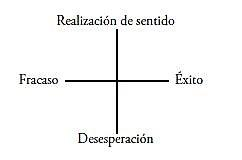

Por Elisabeth S. Lukas
«No hay duda de que Viktor E. Frankl tiene el mérito de haber despertado el interés por el concepto de vida llena de sentido. Este concepto tiene una historia larga y destacada, pero la psicología moderna, hasta hace poco, apenas lo había utilizado, sobre todo porque parecía inaccesible a la ciencia… Fue sólo por la psicología humanista, que Frankl desde hace años vinculó con su logoterapia, que unos nuevos métodos psicológicos no fisicalistas desarrollaron un género nuevo de orientación científica» (Charlotte Bühler y Melanie Allen, Introduction into Humanistic Psychology, Brooks/Cole, Delmont, California).
En los años 1963 a 1964 se ensayó una medición psicométrica de la «frustración existencial»[95] en el Bradley Center de Columbia (Georgia, EE.UU.). James Crumbaugh, director del Laboratorio de Psicología en el Hospital Veterans Administration de Gulfport, Mississippi, ha desarrollado junto con Leonard Maholick[96], el «Purpose-in-Life-Test» (PIL) que consiste en tres partes. Sin embargo, sólo la primera que contiene 20 ítems con perfiles de polaridad ha sido verificada científicamente por medio de test. En controles posteriores se presentaron dificultades de ordenación e interpretación en la evaluación de PIL que, finalmente, obligaron a buscar un nuevo enfoque psicométrico para la variable tan difícil de captar de la «realización de sentido».
El cuestionario, desde el principio, se formuló como sigue: ¿Cuáles son las posibilidades que corresponden a la concreción de la «voluntad de sentido»[97] que son capaces de colmar la necesidad natural de sentido del hombre tal como la postula la logoterapia? Para encontrar la respuesta a esto fue necesario interrogar a numerosas personas puesto que la intuición sola no era suficiente.
Dado que la problemática del sentido en una vida término medio normal más bien está latente en la conciencia y sólo toma cuerpo debido al stress, a la frustración o al defecto extremo de tensión, durante la encuesta fue necesario atraerla directamente al plano consciente.
Por medio de esta técnica de tomar de sorpresa, se eliminaron gran parte de las falsificaciones tendenciosas que siempre acompañan tales encuestas.
En el verano de 1969 se abordaron personas en las calles de Viena y en sus alrededores y se sometieron así a una selección al azar, en la que se eliminaron únicamente las edades bajo 17 y sobre 70 años.
Se variaron los barrios, las horas del día y los días para tener en cuenta la frecuentación irregular de la calle. De manera que se obtuvo una muestra de representatividad normal de un total de 1000 personas, en la cual la participación porcentual de los grupos de menos de 50 años era mayor que los grupos que sobrepasaban los 50. El texto decía en detalle: «Disculpen, por favor, la molestia. Trabajo en el Instituto de Psicología, ¿sería tan amable de responder una pregunta?» (pausa para darles una oportunidad a personas no interesadas o apuradas). «¿Puede decirme, si existe para usted algo que podría calificarse como dador de sentido en su vida y, si así fuera, podría expresar este sentido de su vida en unas pocas palabras?».
Una segunda formulación más sencilla servía para facilitar la comprensión en caso de dificultad. Se labraba un acta en que figuraba la numeración correlativa, sexo, edad, tiempo de reacción (largo o corto) y la respuesta en forma abreviada.
El aprovechamiento de estas respuestas satisfacía no solamente al interrogante sino que también a las bases generales de la psicología humanista, a la que la autora de este trabajo se adhiere. Si en la voluntad de investigar también existe la voluntad de ayudar, adquieren importancia aquellos componentes que, aun disimulados con frecuencia en el rechazo y el sarcasmo, son expresión de sufrimiento y de dificultades internas. A la vista de tales componentes se proseguía a descifrar el amplio material de respuestas. Cada respuesta se señalaba en forma simple o doble; las siglas de los grupos significaban:
En el siguiente cuadro se puede apreciar la distribución de las frecuencias de las distintas clasificaciones. Bajo la columna «lugares» figuran las observaciones de los distintos puntos de la ciudad; en las columnas de números, lo que va entre paréntesis se refiere a la inclusión de la señalización doble que se registró cuando las respuestas Cabían en dos clases de señalización. Las declaraciones de la repartición A son entonces las siguientes: de las 1000 personas, 327 pudieron en total declarar un sentido positivo de la vida según su opinión (ver columna «RSP») y, del mismo modo, 10 más (que figuran entre paréntesis) paralelamente a otra posición sobre el problema del sentido.
Análoga interpretación es válida para las restantes categorías de siglas.
Una interesante indicación puede agregarse: el lugar «Pr» significa «Prater», el centro de diversión de Viena, y precisamente allí se obtuvo el valor más negativo (RSN: 7/2) en las respuestas al problema del sentido. Esto coincide bien claramente con la teoría logoterapéutica de una evasión hacia la diversión ante el vacío.
La distribución B es una presentación de los valores porcentuales en la cual los tantos de señalizaciones dobles fueron agregadas en la mitad de su valor. Las sumas verticales de estos valores porcentuales que fueron divididas por 18 (suma de lugares en los que se efectuó la encuesta) dan valores medios muy importantes, y dan mucho que pensar al mundo de los especialistas. Un 51,5% de 1000 personas abordadas al azar en la calle pudieron confirmar su realización de vida, un 11,9% de 1000 personas que pasan al lado nuestro día tras día, en cambio, no habían encontrado un contenido de vida de significación para ellos. Un 11,7% de los 1000 interrogados todavía seguían en busca de sentido. Un 12,7% preferían no hablar de ello. Un 3,0% no querían o no podían tomarlo en serio y un 9,2% escaparon…
Con relación a los valores porcentuales últimos, es decir, las señalizaciones RR, RIA y NR se podrían agregar las siguientes reflexiones para ser discutidas. El grupo NR contiene aquellas personas que escucharon su pregunta sobre su realización de sentido personal pero luego siguieron su camino sin comentario, esta conducta es, con respecto a su verdadera orientación de sentido, imposible de ser interpretada. Con relación a los grupos RR y RIA, en cambio, se dan cuatro posibilidades de interpretación:
Si se calcula, por decir así en cómputo general, cada una de las cuatro posibilidades representadas en un 25% en las respuestas RR y RIA se obtiene un valor porcentual de 50% para realización de sentido latente negativo (posibilidad 3 y 4). A esto hay que agregar que la posibilidad 1 supone un cociente intelectual por debajo del término medio y por eso seguramente representa menos que una proporción de 25% y también la posibilidad 2 ocurrirá más raramente, debido a instrucción escolar general y a la capacidad de pensar más críticamente. Si entonces la «potencia negativa» de las respuestas RR y RIA se calcula en por lo menos un 50%, resultan los valores porcentuales generales de 6,35 (= la mitad de RR % 12,7) + 1,5 (= la mitad de RIA % 3,0) que sumados al porcentaje negativo calculado de 11,9 dan un valor de 19,8%. Esto significa, aceptando las reflexiones arriba consignadas, un 20% redondeado de orientación negativa al sentido en la encuesta. El valor coincide sorprendentemente con los resultados de investigaciones clínicologoterapéuticas que demostraron que un 20% de los enfermos padecían neurosis noógenas.
No se trata de decir aquí: ¡vengan, Frankl tenía razón! Sin embargo, aquello de lo que habla, no es sólo un fenómeno interesante, sino que hasta podría ser una verdad muy amarga. Amarga para un 20%, lo cual significa uno de cada cinco de nosotros.
Si nos volvemos a un análisis del contenido de las respuestas positivas, no debemos olvidar que sólo un 51,5% de las 1000 personas interrogadas pudieron indicar un sentido de vida más o menos seguro y positivo. Sería, redondeando, la mitad, un cálculo que comparado con los Crumbaugh (1964), señalaba a un 55% de sus grupos normales como «frustrados existencialmente». Eso es un poco más favorable pero todavía acusa una proporción suficientemente alarmante.
Las respuestas positivas fueron sustituidas por tantos conceptos como contenidos se tocaban en ellos (la mayoría de las veces era uno solo). Estos conceptos se pudieron primeramente ordenar en 30 categorías (véase la tabla de la página siguiente).
Se puede comprobar que en el caso de respuestas seguras positivas (RSP) dominaron las siguientes categorías: familia, hijos, profesión, posesiones y hobby; entre las inseguras positivas (RIP) la autoeducación, vida placentera y deberes sociales. Como se trataba de averiguar las posibilidades más importantes de encontrar sentido para la existencia humana, los grupos menos importantes se juntaron, según su significación para formar categorías más incluyentes que ya no designan ámbitos delimitados de los asuntos. La transformación dio lo siguiente:
La tabla adjunta revela la distribución del valor porcentual y el ordenamiento por rangos de las 10 categorías. Está fuera de toda duda que las frecuencias, en la elección de categorías, depende de la población, es decir: categorías como «necesidad vital» o «servicio a un ideal» tienen distintas distribuciones en regiones necesitadas o en nuestra sociedad acomodada.
La distribución en los barrios vieneses está gráficamente ilustrada.
Distribución de los valores porcentuales de las categorías para el área vienesa
Según esto, se encontraron ámbitos de aspectos concretos que las personas interrogadas señalaron como «dadores de sentido», es decir, que poseen la cualidad de salir al encuentro de una «voluntad orientada al sentido» postulada. No es posible explicar las nueve categorías de contenido (aparte de la de «dudoso») solamente con la dinámica instintiva del hombre, de manera que no puede considerárselas como simplemente «adecuadas biológicamente», sino que hay que definirlas como «adecuadas existencialmente». Vemos aquí un punto de partida para la investigación científica de la «dimensión noológica» del hombre, pues la adecuación existencial sirve a la «dinámica noógena»[98] sana y no a la necesidad biológico-psicológica.
Ilustración gráfica (de la tabla anterior)
Las líneas discontinuas indican los valores porcentuales de las respuestas seguras positivas.
Las líneas continuas indican los valores porcentuales de todas las respuestas positivas.
Viktor Frankl, el fundador de la logoterapia, ve la posibilidad del hombre de encontrar sentido en tres categorías de valores: los llamados «valores de creación» (actividad, productividad…), «valores vivenciales» (contemplación, emocionalidad…) y «valores de actitud»[99] (capacidad heroica en relación con sobrellevar golpes del destino y sufrimiento, «poder de resistencia del espíritu»[100]… Después del análisis de la parte positiva del material constituido por las respuestas, quedaba pendiente el interrogante sobre la relación en que se podrían encontrar estas tres realizaciones de valores con las categorías de contenido descubiertas. Además debía investigarse hasta qué punto las tres intenciones de valores se podían extraer del material de la investigación, o sea, si realmente aparecían en la vivencia subjetiva de sentido de la persona.
Luego se descifraron los textos registrados en la encuesta para encontrar nuevos criterios. Respuestas que contenían indicaciones de alegría y plenitud debidas a alguna actividad se señalaron con C (si solamente eran sugeridas con C?), aquellos que expresaron el puro gozo de la vivencia con V (sólo sugerido V?) y, finalmente, había también algunos de los cuales surgían actitudes positivas y valientes frente a impedimentos y fracasos; estos se señalaron A (sólo sugerido A?). En total se dieron entre las 1000 respuestas 156 valores C, 72 valores V y 30,5 valores A, los valores C?, V? y A? se agregaron en su mitad.
Una comparación con otros parámetros (tiempo corto de reacción = TCR; tiempo largo de reacción = TLR; grado de seguridad o inseguridad en las respuestas positivas = RSP o RIP) dio la siguiente información:
Ambos parámetros son indicativos de la seguridad subjetiva con la que dio su respuesta la persona. En los valores C dominan tanto el tiempo de reacción corto (TCR para 2/3 de las respuestas C) como también las señalizaciones RSP del análisis de contenido (seguro positivo en 6/7 de las respuestas C). En los valores V los tiempos de reacción son equilibrados; se trata, sin embargo, preferentemente de respuestas RSP. Sólo con los valores A sucede lo contrario: dan 2/3 tiempo de reacción largo (TLR) y 3/4 datos de contenido inseguros en el texto (RIP).
Además, los datos de valores A representados en un porcentaje mucho menor (3% de todas las respuestas y 11,8% de todas las indicaciones de valores) de manera que, para un valor A, había 2½ valores V y 5 valores C. Respecto a esto, la autora desarrolló la hipótesis de que no debe ponerse en duda el propio valor de esta categoría de valores, sino sólo su limitación conceptual. Mientras la logoterapia sea una psicoterapia, la actitud del paciente hacia su enfermedad y su dolor sigue siendo de significación central. Con la trascendencia del contexto clínico es indispensable una adaptación a condiciones normales. El ámbito vital de la persona normal está constituido de tal manera que siempre puede vivenciar su posición en forma bipolar. En relación con varios factores (como salud, meta de trabajo, felicidad familiar, riqueza, etc.) la persona normal se ubica del «lado del éxito» de la vida; en relación con otros factores más bien del «lado del fracaso». Y la actitud más positiva y también más sana desde el punto de vista psicohigiénico frente al éxito o fracaso (en el sentido más amplio) debe poseer el mismo carácter de valor. Pero ¿qué sería para nosotros, ahora, una actitud positiva frente al éxito? Sólo aquella en que el propio éxito sea usado para ayudar a quienes sufren, para aliviar su dolor. Si por los valores de actitud heroicos de Frankl una vida «sin éxito» se colma de sentido, la «vida colmada de éxitos» recibe por esta actitud humanista sentido y propósito. Que ambas cosas, el heroísmo en el dolor y estar dispuesto a ayudar al prójimo en la suerte, requieren una fuerte superación psíquica y por eso se los puede sumar a los grandes logros del hombre, no necesita ser probado.
Después de estas reflexiones, se procedió a una generalización de la categoría de valores de actitud. El material de las respuestas se investigó en cuanto a indicaciones que podrían revelar «actitud positiva hacia el éxito». Las siglas correspondiente eran G-A o bien G-A? (valores de actitud generalizados); en total se dieron 37 casos G-A o 22 G-A?; sumados (con G-A? considerados en su mitad), 48.
Ahora se juntaron las señalizaciones A? y G-A? ya que, según la hipótesis caracterizan una única dimensión de valor; debido a esta ampliación, se modificó también la distribución de valores porcentuales de las 3 categorías: valores C: 50,40%, valores V: 23,26%, valores (G)-A: 26,34%/100%.
La distribución es notable precisamente porque ilustra un cuadro interesante de la experiencia humana de la situación:
Como la experiencia y la actitud (2/4) significan una interiorización del mundo exterior y la acción creativa (2/4) una exteriorización de procesos internos, se confirma de cierta manera el dualismo del problema filosófico de «cuerpo-alma» también en la psicología.
Volviendo al problema inicial, se puede decir: al interrogante respecto a si las tres categorías de valores se encontraban incluidas en el material de las respuestas puede contestarse afirmativamente. El problema de la relación en que podrían encontrarse las nueve categorías de contenido descubiertas con las igualmente presentes tres intenciones de valores todavía no se ha aclarado. Viktor Frankl adelantó la interpretación de que a las nueve categorías de contenido les corresponde el carácter de «medio y propósito» y sólo su cumplimiento posibilita la realización de intenciones de valor.
Esto recuerda al punto de vista de Maslow quien en su «jerarquía de necesidades» hace depender la gratificación de las necesidades superiores de la gratificación de las necesidades más primitivas. La autora, en cambio, es de opinión que las tres intenciones de valor representan una abstracción hipotética muy oportuna de cosas dadas que encuentran su concreción realista en ámbitos de contenido distinto. De acuerdo con eso serían equivalentes las intenciones de valores y las categorías de contenidos, pues se trata de factores cuya presencia da sentido a la existencia humana, sólo que uno estaría enfocado desde el observatorio del teorizador que abstrae y el otro adecuado al sistema conceptual del sencillo hombre medio.
Para mayor validación de la logoterapia, se desarrolló un cuestionario que debía llenar varios propósitos: por un lado, se necesitaba un instrumento de medición para descubrir a tiempo dificultades «noógenas»[101] en el ámbito normal. Nadie dudará que el neurótico noógeno, antes de acudir a la clínica, es decir, antes de que se produzca la desviación hacia lo patológico, pertenece a la población normal. Tampoco puede dudarse de que es durante su fase normal que comienza la frustración existencial que más tarde lo empuja a la apatía psíquica o a descargar agresividad sin sentido. Si existiera un instrumento medidor para descubrir a tiempo las dificultades noógenas, se las podría enfrentar con tiempo, con conversaciones y consejos, y se habrían evitado las perturbaciones psíquicas más graves.
Por otro lado, se requería también un test para puntualizar las distintas dimensiones de la orientación al sentido de las personas de manera que por medio de la intercorrelación de evaluación se pudiera descubrir la covariancia de los diferentes factores (de sentido). Para satisfacer ambas exigencias se creó el Logo-Test. Originariamente estaba constituido por cinco partes, que luego se redujeron a tres. La parte más importante es la primera que investiga en qué proporción se halla el autoconocimiento noético de una persona, ya que mide en cuántas, de las nueve categorías de contenido descubiertas, la persona ve para sí posibilidades concretas de realización. La parte segunda mide manifestaciones de las frustraciones existenciales y la parte tercera exige una autovaloración de la persona respecto a las metas de su vida, su éxito en la vida y su actitud hacia ellos.
Este cuestionario para la captación psicométrica de dificultades noógenas, como para el descubrimiento de conexiones internas, fue presentado a un grupo de un total de 340 personas: 285 de ellas pertenecían a una muestra representativa de la normalidad, 55 eran enfermos pertenecientes a grupos de diagnósticos diversos de la Clínica Psiquiátrica Neurológica de Viena. Las 285 personas normales fueron sometidas a tests en un ambiente muy opuesto al del instituto psiquiátrico, es decir durante dos fiestas populares en la Baja Austria. La razón para ello era que en el desarrollo del concepto de la logoterapia siempre ha estado en primer lugar el ámbito clínico. Allí comenzaron las reflexiones que llevaron, partiendo de la debilidad e insuficiencia de los enfermos, a la tragedia general humana de dolor, culpa y muerte. La imagen humana establecida por la teoría logoterapéutica pretendió empero tener validez para el hombre común.
Pues si ahora, en el 20% de los pacientes neuróticos se comprueban sentimientos de falta de sentido, es difícil deducir de eso la «voluntad de sentido» que se supone que todos los hombres deben llevar en sí.
Es esta la razón por la cual aquí se utilizó un grupo de personas que se diferencian esencialmente de aquellas de los estudios anteriores. Si en un momento en que los sujetos testados tienen ganas de entretenerse y sin embargo para muchos el problema del sentido todavía es vigente, y si al mismo tiempo surgen eventuales dificultades en este terreno bajo la forma de fuertes efectos de frustraciones a pesar de un ambiente donde estas se apaciguan, entonces está probada la legitimidad de transferir la logoterapia al campo de lo normal.
De todas estas 340 personas se agregaron pruebas de Rorschach que, traducidas a un psicograma general de personalidad, sirvieron de criterio comparativo interno. Además se pusieron a disposición los datos personales de los sujetos testados: sexo, edad, profesión, hábitat (campo o ciudad), educación, etc. El cálculo de Habilidad del Logo-Test se realizó según el modelo de homogeneidad del análisis del Basch; a la parte primera se le agrega el cálculo de la Habilidad media que figura con 0,72 aumentada según Spearman-Brown en 0,84. Después de la indispensable selección de ítems, también se sometió al análisis del contenido de la parte tercera (autovaloración subjetiva) a un control de objetividad por medio de una comparación de valores. La interpretación de los tests sigue en dos continuos, el «continuo del éxito» (valoraciones de 5 puntos, desde mucho éxito a sin éxito alguno) y el «continuo de sentido» (5 puntos de valoración desde plenitud de sentido a vacío de sentido).
Para comprender mejor tenemos que decir unas palabras sobre los problemas de diferenciación de la logoterapia. Estos problemas de diferenciación se refieren a la antigua controversia sobre si la plenitud de sentido constituye un determinante psíquico de la autocomprensión independiente o sólo es un resultado de la conciencia de éxito subjetivo. Victor Frankl se pronuncia decididamente por la heterogeneidad de ambos componentes y los simboliza con sus conocidas «coordenadas»[102].

Las investigaciones presentes no pudieron demostrar que la «disposición para la desesperación» y la «orientación al sentido» estén correlacionadas en forma negativa, pero pudieron responder a aquellas voces opositoras que quisieron reducir la vivencia del sentido a la vivencia del éxito. En esta ocasión, se señala que también las significativamente «más altas evaluaciones de sentido» del PIL (test del objetivo en la vida) en los grupos de éxito no deben considerarse como argumento contrario a las «coordenadas», sino como resultados de una validación insuficiente del PIL que nunca había sido comparado con un criterio exterior realmente correspondiente con la variación de sentido.
Del ordenamiento de los 340 sujetos testados en el continuo de éxito, así como en el continuo de sentido y en base a una autovaloración de la parte tercera del Logo-Test, se pudo ganar una visión general que rinde una colaboración interesante al problema de la diferenciación. La escala de 5 puntos utilizada para las evaluaciones de graduación era:
en la cual +2 significaba la mayor realización del sentido, o sea el mayor éxito en la vida, y 0 era el punto neutral.
Un resumen de las evaluaciones positivas y negativas dio el siguiente cuadro:
En la autoconciencia del hombre trente al «éxito en la vida», corresponde a las escalas normales una proporción de 2:1, esto es: para 2/3 de éxito, 1/3 de fracaso en una vida media. En los pacientes sometidos a tests la proporción era inversa, esto es 1:2. Ellos se vivenciaban en un promedio de sólo 1/3 de éxito a 2/3 de fracaso.
Con ello se compararon las escalas del «continuo de sentido». A las escalas normales corresponde la proporción 3:1, es decir, se vive más la realización de sentido como éxito, a saber 3/4 de realización de sentido y 1/4 de vacío de sentido. Si la realización de sentido fuera congruente con la vivencia del éxito, se deberían invertir las cifras proporcionales en los grupos clínicos, esto es, deberían ser 1:3. Sin embargo eran 1:1, es decir: aun pacientes con sólo 1/3 de vivencia de éxito podían considerar su vida con sentido reducido a la mitad (1/2).
Estas cifras parecen confirmar la hipótesis de Viktor Frankl, y presentan una escala normal que refleja el promedio de la psico y noodinámica en los sanos: para 2/3 de éxito, 3/4 de realización de sentido en la vida.
También todas las investigaciones siguientes con las escalas de evaluación de la parte tercera señalaban que el continuo de sentido y el de éxito no se debían identificar (por ejemplo, parte tercera RS [realización de sentido], parte tercera E [éxito] r = 0,8).
Acerca del problema de la diferenciación puede agregarse una reflexión: modernos principios de coordinación entre logoterapia y terapia conductista (Eysenck) tienden a presentar el sentido como «refuerzo en el nivel más alto» (Robinson). Por un lado, este punto de vista es digno de aplauso, ya que subjetiviza totalmente el concepto de sentido (un refuerzo nunca podría ser algo objetivo) y lo diferencia por ello de representaciones religiosas de una voluntad superior (= objetiva). Por otro lado, naturalmente, un «éxito en la vida hasta el presente» constituye un refuerzo enorme en el ámbito humano y por definición nos lleva otra vez al peligro de hablar de sentido, pero pensar en éxito.
Como Crumbaugh con su PIL-Test fue a parar directamente a esta problemática, era muy importante que, al construir el Logo-Test, se separaran claramente ambas variantes. Parece haberse logrado, según lo muestra la baja correlación entre la autovaloración de la persona en el continuo de éxito y el de sentido. Como después también se probó que sólo las autovaloraciones tienen una relación relevante con la psicohigiene personal (parte tercera, RE-R [test de Rorschach] r = 0,67), entonces se acepta sin reservas aquel teorema de la logoterapia que dice que la realización de sentido debe buscarse en una dimensión diferente a la de la conciencia del éxito.
En total se intercorrelacionaron en la investigación 10 datos personales y 13 valoraciones de test por persona. De acuerdo con las matrices resultantes esto parecía ser una gran cantidad de información, pero como con ella había que juzgar a 340 personas acerca de su orientación al sentido, el material todavía resultó escaso. Las comparaciones entre datos personales de unos y otros sirvieron más que nada de medidas de control; no se encontraron «significados del azar» de ninguna clase que permitieran sospechar que también otros resultados significativos fueran producto del azar.
Para la validación de la logoterapia eran esenciales las comparaciones de valores de tests entre sí y de valores de test con valores personales. La computadora trabaja con cuatro columnas: la columna 0 elabora las variables contables del total; la columna 1, el de la prueba de normalidad; columna 2 igualmente la prueba de normalidad, pero disminuida en un grupo de personas en las cuales había aparecido cierta proporción de mentiras en el cuestionario (discrepancias en el texto); y columna 3, los valores del grupo clínico de control.
De 73 hipótesis que se han establecido bastadas en teorías logoterapéuticas, se han confirmado 36 del nivel 1%, 13 del nivel 5% y 24 no se han confirmado. Además tuvo que rechazarse en 17 casos, la hipótesis cero, de manera que, en resumen, se dieron 90 distribuciones (algunas esperadas y otras no), que por supuesto se sometieron a una interpretación semántica. Todas estas 90 «tesis» han sido comprobadas estadísticamente y con exámenes de significado, surgiendo estos de un material, que tanto por su volumen como por su representatividad, nunca había sido presentado en estudios logoterapéuticos (excepto la versión segunda de PIL de Crumbaugh, y también él usó sólo una muestra selectiva). Por tal razón, representan argumentos científicos que no pueden ser pasados por alto sin más por los especialistas. Y si, entre ellos, se encuentran confrontaciones como las siguientes: «Con la orientación al sentido en disminución, sube la presencia de síntomas de frustración» o «realización de sentido experimentado subjetivamente como insuficiente se manifiesta con mucha más fuerza como fracaso en un aumento de los síntomas generales de frustración» (ambos se refieren al nivel 1%). Esto suena a trivial para el logoterapeuta, pero no hay que olvidar que en la psicología actual no existe ninguna teoría de las frustraciones en la que se incluya la vivencia personal de sentido. No solamente esto: estas dos tesis, junto con otras, contradicen en forma inequívoca el principio psicoanalítico según el cual las frustraciones provienen exclusivamente de traumas producidos en la infancia así como de represiones de los instintos.
De los 90 resultados de la investigación se han cristalizado grupos de fenómenos que están estrechamente relacionados con la psicodinámica:
Dentro de cada grupo se correlacionan todos los fenómenos entre sí muy significativamente.
Tres de las hipótesis presentadas no se han verificado: primero, la desesperación o bien la disposición a la desesperación no es el «opuesto» de plenitud de sentido. Los datos más bien señalan que la indiferencia en situaciones difíciles de la vida es expresión de vacío de sentido. De acuerdo con esto, tendrían que corregirse las «coordenadas» en el campo normal.
Segundo, no se ha comprobado que los que pertenecen a la población rural tengan mejor orientación al sentido: eso significa que la tecnificación y la alta industrialización de la civilización no pueden ser culpables del constante aumento de vacío existencial en la sociedad moderna.
Tercero, se ha demostrado (sorprendentemente) que no ayuda al logro de la realización de sentido el aferrarse con voluntad de sacrificio a metas ambicionadas en la vida, sino más bien la plasticidad psíquica y la flexibilidad de saber adaptarse continuamente a nuevas situaciones[103].
Por lo demás, se han verificado todas las hipótesis importantes de la teoría logoterapéutica. Partiendo de tres tesis pudo formularse el teorema básico de la logoterapia: Si desciende la orientación al sentido en el hombre, desmejora su psicohigiene general y aumenta la cantidad de efectos de frustración; si mejora su orientación al sentido también aumenta su capacidad de desarrollar una actitud positiva hacia toda situación de éxito en la vida.
Un resultado particularmente interesante y más bien inesperado lo constituye la curva sentido-edad. (La tesis correspondiente dice: «La elevación de la orientación personal al sentido depende de la edad». La curva normal señala un descenso particularmente fuerte de la orientación al sentido entre los 20 y 30 años y los valores más elevados se ubican entre los 40 y los 60 años, en el nivel de significancia 1%).
Curva normal equilibrada
Queda la cuestión sobre cómo interpretar esta curva de la edad. Viktor Frankl pone el problema en relación con el pasado personal del hombre que, en la vejez, tiene mayor contenido y está lleno de experiencias acumuladas. Él piensa que las personas mayores, instintivamente, saben lo que la logoterapia enseña, es decir: que justamente del «pasado nada se halla perdido irremisiblemente, sino por el contrario está todo guardado y asegurado». Sólo una cosa da que pensar, y es el descenso de la curva de la edad alrededor de los 55 años, difícil de explicar a través de este «saber prerreflexivo».
La interpretación que la autora sugiere tiende a suponer una elevación del umbral de la toma de conciencia de los problemas del sentido, que podrían explicarse por la «actividad» entre los años 30 y 60 de la vida. En la juventud, tal como en el retiro, podría haber descendido el umbral de la conciencia debido a la desgravación general de deberes familiares y profesionales (compárese con el descenso general del nivel consciente cuando el trabajo es demasiado fácil y hay aburrimiento), por lo que el descubrimiento de dificultades y problemas noógenos se aliviaría.
Acerca del tema de la toma de conciencia de los problemas del sentido, también nos ayuda aquella tesis que dice: «estudiantes y universitarios tienen un promedio más alto de problemas de sentido que representantes de otros ramos ocupacionales» (en el nivel de significancia 1%). Personas más inteligentes, o sea de más alto nivel de educación, con mayor facilidad toman conciencia de procesos psíquicos. Ellos tienen, en muchas áreas, umbrales de conciencia más accesibles y, así también están más abiertos a la problemática del sentido. También por eso están más expuestos, como lo demuestran los muchos motines estudiantiles de los últimos años. «Luchar por una causa» puede ser vivenciado como dador de sentido (cf. categoría «servicio a un ideal») y una «causa» se construye con facilidad.
No sabemos cuál es la distancia desde el ansia insatisfecha de sentido hasta la descarga sin sentido de la agresividad. Pero sabemos que, con una plenitud de sentido en disminución, aparecen los síntomas de frustración, se agravan las tendencias neuróticas y depresiones y empeora la psicohigiene general. También se aspira a metas encarnizadamente (tesis correspondiente: «Con mala orientación de sentido la disposición de abandonar las metas a las cuales se aspira, si las circunstancias así lo exigen, disminuye», corresponde al nivel de significancia 1%). ¿Quiere decir esto que del vacío de sentido se llegan a construir metas para poder comprometerse con algún fin? ¿Acaso metas de tipo destructivo?
Presentemos una última indicación: la que se relaciona con la función dadora de sentido de la necesidad. Las investigaciones de este trabajo lograron demostrar, entre otras cosas, que el interés por el bienestar propio (categoría más frecuentemente nombrada de los factores dadores de sentido) es un elemento esencial en el proceso de hallar sentido. Como generalmente el interés es mayor por aquellas cosas cuya necesidad puede satisfacerse poco, es seguro que también el interés en el propio bienestar crece con el aumento de la necesidad, es decir, domina allí donde a la gente «no le va bien». La lucha por la existencia misma parece dar ya un alto grado de plenitud de sentido y sigue siendo la opinión de la autora que también esta lucha por la existencia brinda una posible concreción de la «voluntad de sentido». A las palabras de Schopenhauer que el hombre siempre oscila entre dos extremos, o sea entre la necesidad y el aburrimiento, hay que agregar que el primero quizás sea más apremiante desde el punto de vista físico, pero que el segundo constituye el más peligroso desde el punto de vista psíquico. En los niveles sociales, en los cuales el propio bienestar es natural y casi aburrido, falta la función de la necesidad dadora de sentido y podría ser esta falta de necesidad la que ha causado ese gran «vacío existencial»[104] en los países civilizados y no, como se dijo, la industrialización del mundo moderno. Si todo lo necesario se ofrece espontáneamente, si a veces el ofrecimiento sobrepasa la necesidad, disminuye el interés por la adquisición y la alegría por lo conseguido. Esto también explicaría por qué tantos jóvenes de buena familia caen en la mala senda, cuando poseen todo: salud, bienestar, un porvenir asegurado, etc. Lo que no poseen en este caso es una feliz orientación al sentido, y nada puede suplir eso.
Podemos iluminar el tema «realización de sentido en la vida» desde todos los ángulos, siempre descubriremos de nuevo que la gente joven es vulnerable desde el punto de vista noógeno. En la logoterapia también se dice que la confrontación espiritual con la propia existencia llena de sentido, es un logro del joven en proceso de maduración, el cual aprende así a controlar su vida y a formarse a sí mismo. Por el otro lado, sabemos por las angustiantes estadísticas de nuestra época, que muchos jóvenes no logran encontrar suficiente sentido en su vida. Se escapan hacia el placer del momento, hacia la ilusión de la droga y la monotonía de las acciones sin objeto.
Se supone que las agresiones esconden depresiones y los éxtasis cubren negativismos. Sean cuales fueran las razones (de agitación de la juventud, umbrales bajos de conciencia, sobreabundancia de ofertas para necesidades insignificantes…), deberíamos preguntarnos nosotros psicólogos cómo podríamos ayudar, aliviar y evitar.
El instrumento medidor usado en este trabajo constituye, en su versión perfeccionada, un test abreviado para descubrir dificultades noógenas en el ámbito de la normalidad. Se validó según dos criterios: la autovaloración de la persona referente a su propia orientación al sentido y un criterio interno o sea el psicograma de Rorschach de la persona. Por medio de una modificación de señalización del test de Rorschach se logró que las informaciones se pudieran unificar para una evaluación sencilla de psicohigiene que luego correlacionaba en alto grado con la evaluación total del Logo-Test (r = 0,77). El test se estandarizó y posee una normación de cuartiles o bien deciles. Su significado práctico reside en que «da la alarma» cuando las dificultades noógenas ya han alcanzado una proporción crítica. Podría —adoptado como instrumento de control, p. e., en institutos de asistencia a los jóvenes, escuelas y hogares— señalar el momento necesario de la intervención logoterapéutica. Y así se le ayudaría a más de un joven en su bregar por metas y sentidos, antes de que cayera en la frustración existencial y se «deslizara» por la pendiente neurótica o depresiva.
Asimismo el test, en el nivel del 1%, diferencia entre personas normales o enfermos psiquiátricos. El perfil de edades de la distribución de evaluación era en el grupo patológico claramente complementario al grupo normal (véase curva normal de edades). Mientras que personas normales alrededor de 35 años muestran un promedio de las mejores orientaciones al sentido, los enfermos psiquiátricos de esa edad muestran el máximo de dificultades noógenas. Debido a la clara diferenciación entre sujetos normales y enfermos psíquicos, que el test ofrece, también se comprobó que a la variable psíquica «orientación personal al sentido», que el test determina, le corresponde una alta significación de salud.
Se adjunta un ejemplar del Logo-test con manual; para la parte tercera, se dan distintas versiones para ambos sexos (aquí unificadas para simplificar). El cálculo es sencillo y con cierta práctica se obtiene una elevada coincidencia de valores en la parte tercera. Los resultados de las evaluaciones son:
Personas del cuartil L (Q1) poseen la mejor posibilidad de realización de sentido. Personas del cuartil 4 (Q4) contrariamente pertenecen al 25% que tiene la peor realización de sentido. Como en todos los estudios anteriores, alrededor de un 20% de las personas normales se consideraron con frustración existencial, una evaluación de Q4 ya tendrá que considerarse como «sospechoso de crisis». El decil 9 (D9) abarca ahora aquellos 20% de la mínima realización de sentido. Las evaluaciones que se ubican allí son evaluaciones críticas que señalan que las personas deben someterse a una atención psicológico-terapéutica. El decil 10 (D10) caracteriza evaluaciones de casos ya patológicos.
Este trabajo se realizó con el concurso de este breve test sobre la base logoterapéutica y tenemos la esperanza que, no solamente el test, sino diversos detalles del material resultante, puedan constituir un pequeño adoquín para la gran construcción de la calle de las ciencias humanas. Y si esta calle ha atravesado algún valle y ha sorteado más de un peligro y aunque tampoco sabemos dónde nos llevará, debemos, sin embargo, establecer una cosa: la logoterapia ha colocado una base bien sólida. Podemos confiar en ella.
Logo-test[105]
(de Elisabeth S. Lukas)
| Nombre: | Edad: |
| Sexo: | Profesión: |
I). Léanse las siguientes afirmaciones. Si hay entre ellas algo que coincida con su persona hasta tal punto que podría provenir de usted mismo, escriba «sí». Si encuentra algunas que son exactamente lo contrario de su propia opinión, escriba «no». Puede dejar libre el casillero si le cuesta decidirse.
II). Marque, por favor, con qué frecuencia tuvo las siguientes experiencias y trate de ser sincero:
III).
¿Cuál de estos hombres (mujeres) era más feliz?
¿Cuál de estos hombres (mujeres) sufre más?
Sólo para el psicómetra
| Parte I | Suma: |
| Parte II | Suma sin ítem 5): |
| Ítem 5): | |
| Parte III | Feliz: |
| Sufre: |
Evaluación total:
Edad:
Resultado:
¿La persona se ubica en el Q4, D9, D10, Q1? centro
Manual para el Logo-Test
Cálculo:
Parte I
Parte II
Parte III
Autovaloración de la persona extraída del texto en el continuo de sentido:
AS = más alta realización de sentido.
BS = más baja realización de sentido (no confundir con éxito).
Actitud positiva (plena de sentido) a) hacia el propio dolor, b) hacia el propio éxito (dolor ajeno)
Evaluación total
Distribución de frecuencia de la evaluación total acercada a la curva de normalidad.
BIBLIOGRAFÍA
La autora de este trabajo ha publicado en los años 1980-1981 en la editorial Herder, Friburgo (Herderbücherei), la siguiente obra en tres volúmenes sobre logoterapia aplicada:
N.º 825: Auch dein Leben hat Sinn (caminos de curación por la logoterapia).
N.º 864: Auch deine Familie braucht Sinn (ayuda logoterapéutica en la educación).
N.º 905: Auch dein Leiden hat Sinn (alivio en la crisis por medio de la logoterapia).